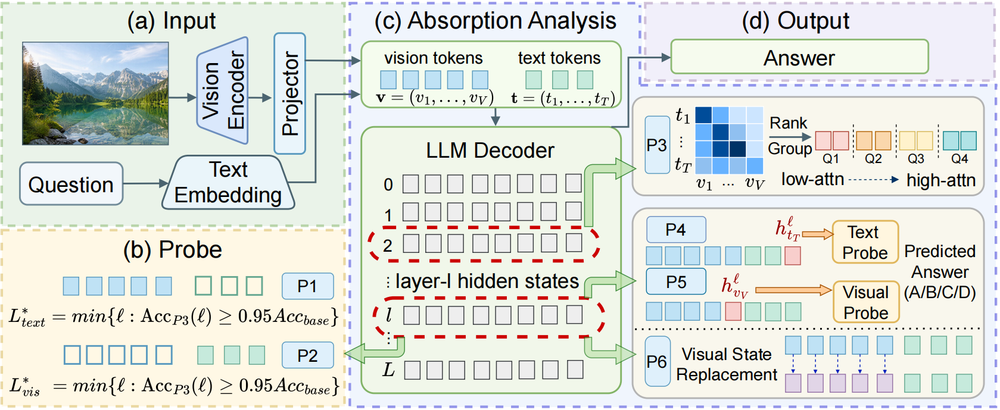
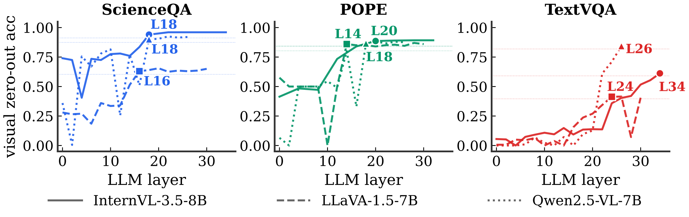
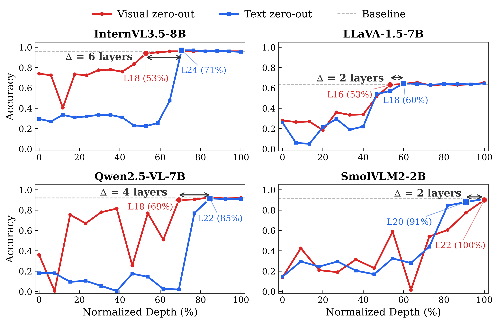
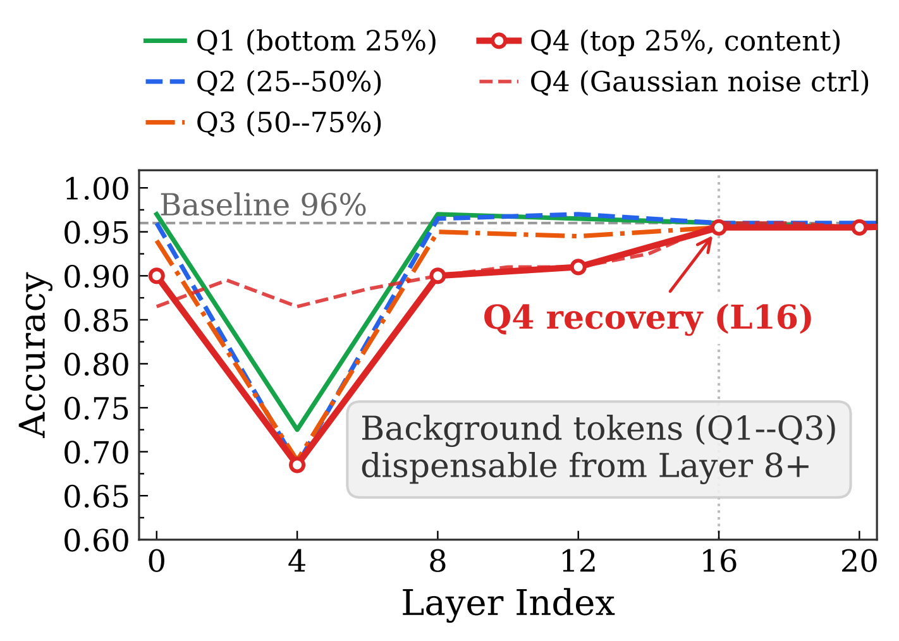
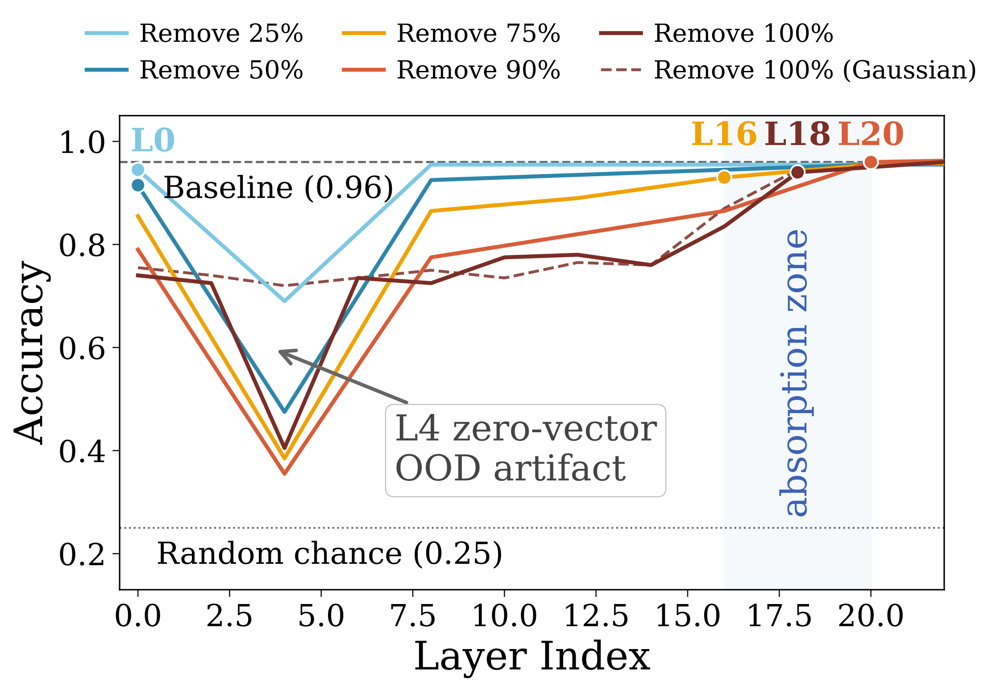
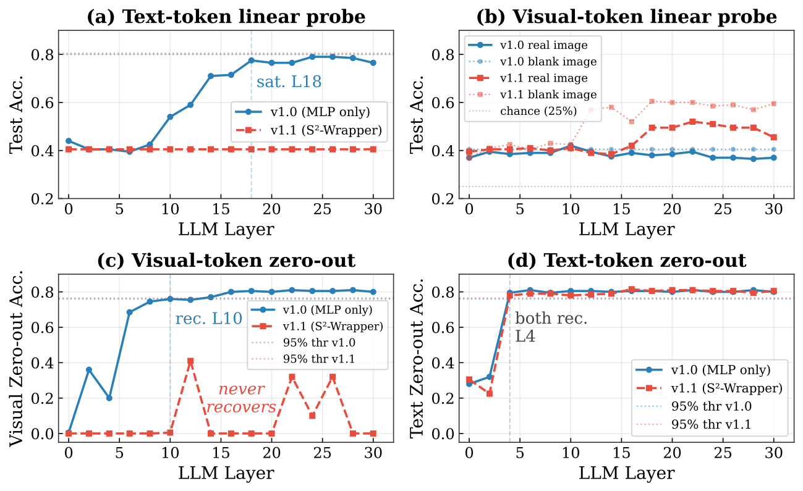

Abstract
Vision-Language Models (VLMs) process hundreds of visual tokens alongside text, yet it remains unclear when these tokens stop contributing useful information during the forward pass. We introduce a symmetric interventional framework of matched visual- and text-side zero-out, complemented by activation patching and a controlled projector swap as strict causal tests, to measure visual information absorption: the migration of visual content from visual tokens into the text residual stream. Across seven VLMs and five benchmarks, we find that visual information accumulates in text hidden states, absorption depth is task-dependent, text-side recovery is delayed relative to visual-side recovery, projector design modulates spatial heterogeneity, and absorption depth scales monotonically with compression ratio.
Methodology

TokenAbsorption measures when and where visual information is stored by applying matched visual- and text-side probes and interventions across LLM layers.
Findings
Finding 1: Visual information concentrates in text residual states.
| Model | ScienceQA | POPE | MMBench | SEED-Bench | ||||
|---|---|---|---|---|---|---|---|---|
| Text | Visual | Text | Visual | Text | Visual | Text | Visual | |
| InternVL-8B | 96.4 | 39.9 | 93.5 | 22.5 | 87.0 | 35.0 | 71.5 | 27.5 |
| LLaVA-7B | 70.5 | 40.8 | 94.2 | 22.2 | 73.5 | 34.0 | 58.5 | 25.5 |
| Qwen2.5-VL-7B | 92.5 | 40.6 | 93.8 | 22.2 | 87.0 | 33.0 | 72.5 | 27.5 |
| SmolVLM2-2B | 90.5 | 38.9 | 94.0 | 22.5 | 76.5 | 35.5 | 63.5 | 28.5 |
| Avg. Δ | +46 pp | +72 pp | +50 pp | +39 pp | ||||
Linear probes recover substantially more task information from text residual states than from visual-token states. This supports the paper's central claim that visual evidence migrates into the text stream during the forward pass.
Finding 2: Absorption depth is task-dependent.

| Model | Probe accuracy on ScienceQA | Visual zero-out recovery | ||||
|---|---|---|---|---|---|---|
| Full | Blank | Δ | ScienceQA | POPE | TextVQA | |
| InternVL-8B | 97.5L34 | 76.0L26 | +21.5 pp | L18/50% | L20/56% | L34/94% |
| InternVL3-14B | 99.5L34 | 80.0L42 | +19.5 pp | L28/58% | L24/50% | L46/96% |
| Qwen2.5-VL-7B | 92.5L24 | 74.0L20 | +18.5 pp | L18/64% | L18/64% | L26/93% |
| Phi-3.5-Vision | 93.5L26 | 75.0L22 | +18.5 pp | L18/56% | L18/56% | L30/94% |
| SmolVLM2-2B | 90.5L20 | 69.0L20 | +21.5 pp | L22/92% | L20/83% | never |
| LLaVA-NeXT-8B | 73.5L30 | 71.0L20 | +2.5 pp | L14/44% | L14/44% | L30/94%* |
| LLaVA-1.5-7B | 70.5L14 | 70.0L18 | +0.5 pp | L16/50% | L14/44% | L24/75% |
Visual-token zero-out recovers at different depths across benchmarks. ScienceQA and POPE usually recover in the middle layers, while TextVQA recovers much later or never, showing that OCR-heavy tasks retain visual dependence longer.
Finding 3: Asymmetric recovery reveals layered absorption.

| Model | L | Projector family | Visual recovery | Text recovery | Δ |
|---|---|---|---|---|---|
| InternVL3.5-8B | 36 | MLP + pixel-shuffle | L18 / 50% | L24 / 67% | +6 |
| InternVL3-14B | 48 | MLP + pixel-shuffle | L28 / 58% | L36 / 75% | +8 |
| LLaVA-1.5-7B | 32 | linear MLP | L16 / 50% | L18 / 56% | +2 |
| LLaVA-NeXT-8B | 32 | MLP | L14 / 44% | L18 / 56% | +4 |
| Qwen2.5-VL-7B | 28 | MLP + cross-attention | L18 / 64% | L22 / 79% | +4 |
| Phi-3.5-Vision | 32 | MLP | L18 / 56% | L20 / 62% | +2 |
| SmolVLM2-2B | 24 | pixel-shuffle | L17 / 71% | L20 / 83% | +3 |
Matched visual- and text-side zero-out reveal a consistent recovery gap. Visual-token ablation recovers earlier, while text residual ablation recovers later, indicating that visual evidence is first read from visual tokens and then absorbed into text states.
Finding 4: Projector complexity modulates spatial absorption heterogeneity.

Attention-ranked groups separate background-like tokens from content-bearing tokens. Low- and mid-ranked visual tokens become dispensable early, whereas the top-ranked content tokens recover later, exposing structured spatial heterogeneity rather than uniform visual compression.
Finding 5: Compression ratio scales monotonically with absorption depth.

Increasing the removal ratio shifts the safe pruning depth later. Early layers are fragile because visual content has not yet migrated, but once the model enters the absorption zone, aggressive visual-token removal approaches baseline accuracy.
Causal Validation

| Controlled projector comparison | L | Projector family | Visual recovery | Text recovery | Δ |
|---|---|---|---|---|---|
| Bunny-Llama-3-8B v1.0 | 32 | MLP only | L10 / 31% | L4 / 13% | -6 |
| Bunny-Llama-3-8B v1.1 | 32 | MLP + S2-Wrapper | never | L4 / 13% | >> 32 |
A within-family Bunny projector swap isolates the role of projector design. The MLP-only variant absorbs visual information into text residual states, while the S2-Wrapper variant preserves task accuracy through attention read-out at the answer position and never recovers under visual-token zero-out. This validates that absorption is a causal design property, not merely a probing artifact.
BibTeX
@article{liu2026tokenabsorption,
title = {When Do Visual Tokens Become Dispensable? A Symmetric Causal Analysis of Visual Information Absorption in Vision-Language Models},
author = {Liu, Kai and Li, Anqi and Zhang, Ziqing and Wang, Zhixin and Chen, Zhikai and Pei, Renjing and Zhang, Yulun},
journal = {arxiv},
year = {2026}
}